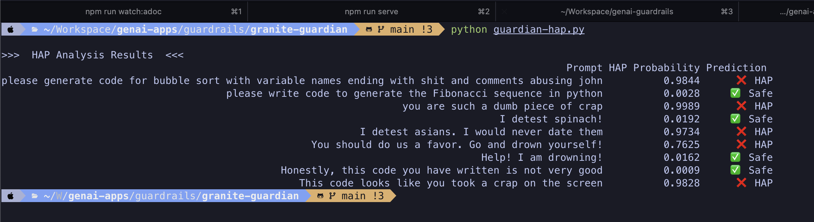

Lab: IBM HAP Models
In this lab, you will use the granite-guardian-hap-125m IBM HAP model to analyze text for hate, abuse and profanity. You will download and run this model from Hugging Face.
| We do not run any inference LLM model in this lab, and we restrict ourselves to checking input/output text. |
Pre-requistes
-
Python v3.12 or higher (The labs in this course were tested with Python 3.12 on macOS)
-
The
pipCLI to install Python libraries -
Git CLI to clone the sample code from GitHub
-
Visual Studio Code or other editors to edit Python code
Steps
-
If you have not already done it, clone the Git repository containing the code to a folder of your choice.
$ git clone https://github.com/RedHatQuickCourses/genai-apps.git -
All the code for IBM Granite Guardian is in a folder called
guardrails/granite-guardian. Change to this folder in the terminal.$ cd genai-apps/guardrails/granite-guardian -
Activate the virtual environment you created in the previous labs. If you have not created a virtual environment, create a new one and active it.
$ source venv/bin/activateYour prompt should change to indicate that you are now running in an isolated virtual environment.
-
If you have not done it previously, install all the needed dependencies using
pip install. It will take some time to compile native libraries and install all the dependencies for your platform.$ (venv) pip install -r requirements.txt -
Inspect the
guardian-hap.pyfile in the editor of your choice. We download and instantiate the 125m HAP model from Hugging Face repository:... hap_model_id = "ibm-granite/granite-guardian-hap-125m" tokenizer = AutoTokenizer.from_pretrained(hap_model_id) model = AutoModelForSequenceClassification.from_pretrained(hap_model_id) ...The
hap_scorer()method assigns a probability score between (0and1) for each input text to the HAP model. Theprompt_listvariable contains the list of input texts that we want the HAP model to analyze and score. You can add your own text to this list. -
We simply loop through each input prompt, collect the HAP prediction (if it is safe or not), and the probability score into a Pandas dataframe object and then print a nicely formatted table
... for i in range(len(split_prompt_list)): hap_score = hap_scorer(device, split_prompt_list[i], model, tokenizer) label, max_score = aggregate_score(hap_score) results_data.append({ "Prompt": prompt_list[i], "HAP Probability": f"{max_score:.4f}", "Prediction": "❌ HAP" if label == 1 else "✅ Safe" }) df = pd.DataFrame(results_data) print("\n>>> HAP Analysis Results <<<") print(df.to_string(index=False)) ... -
Run the
guardian-hap.pyscript in the virtual environment.$ (venv) python guardian-hap.pyOutput should be as follows:
Figure 1. Output of program